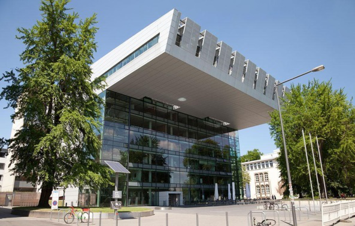
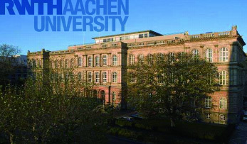
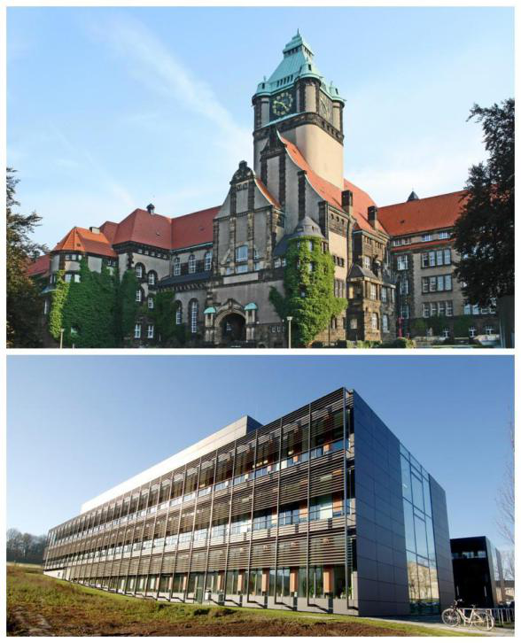
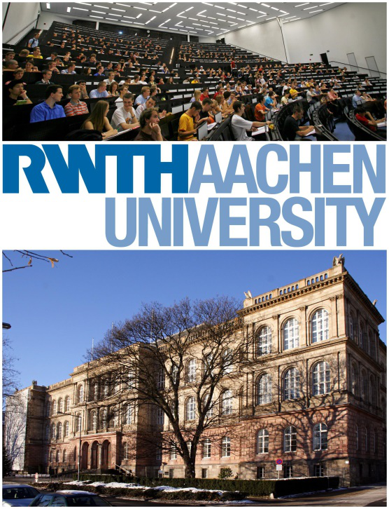

学校介绍：
亚琛工业大学（简称RWTH Aachen）位于北莱茵-威斯特法伦州，是德国最负盛名的理工科大学之一，也是世界顶尖理工科大学之一。亚琛工业大学成立于1870年，自成立以来，不断开拓理工科目新领域。亚琛工业大学理工科实力强劲，电子、机械制造、冶金工程方面排名一直名列德国第一，计算机、建筑、物理等学科也在德国大学排行榜上位列三甲。
2016年QS世界排行榜146名，德国11所“精英大学”之一，欧洲著名理工科大学联盟IDEA 联盟的4个成员之一，德国TU9工科大学联盟，TIME欧洲顶尖工业管理者高校联盟德国7所高校之一。2015年，在德国权威大学排名——《德国经济周刊》的大学排名中，亚琛工业大学再次蝉联德国工科大学排名首位。其中，亚琛工业大学机械工程、经济工程、自然科学位居德国第1，电气工程位居德国第2，信息学位居德国第3。同年的QS世界大学学科排名中，亚琛工业大学的机械工程更是高居德国第1，世界第12，得益于机械学院在汽车、制造、计算工程等多个领域在世界范围内的卓越成就。
德国亚琛工业大学寒暑期专业预备课程（上课地点：亚琛工业大学，包含住宿（学生宿舍），接送机，周一至周五早午餐费，签证费，往返机票）。
项目要求：
1. 选派对象：在读本科生，硕士生
2. 交流时间：14天，2018年2月18日——3月3日
3. 课程内容：工程类学术课程，校园参观，德国学生文化交流活动等。项目期间全英语授课（没有英语成绩要求,课程全程有中文翻译）
4. 费用：40000人民币，费用包含住宿<学生宿舍>，德国境外接送机，周一至周五早午餐费以及签证费，往返机票。
5. 报名截止日期：2017年11月15日。
6. 课程结束后，将获得亚琛工大培训结业证书。
7. 该项目由学院统一组织报名，直接与学院导员报名，进行择优录取。
8. 交流报名名额：4名。
★专业预备班专业设置：
2018年寒假：
Medatronic and Robotic Systems Engineering（机电一体化及机器人系统）
★★交流亮点：
1、 亚琛工大专业预备班交流项目拿商务签证（签证类型：C），出境有保障。
2、 全英语授课（没有英语成绩要求，课程全程有中文翻译），课程结束后获得亚琛工大培训结业证书；
3. 依据佛科院外事2017-5号文《佛山科学技术学院学生出国（境）交流学
习奖助学金管理办法》规定，学习交流结束后，学生可凭结业证书，或亚琛工大教授推荐信，获得一定数额的海外交流资助。并且，学生若有意前往德国深造，校方将协助其研究生阶段进行团审合作院校（弗莱贝格工大、莱比锡大学、哈勒大学）的申请。
★★★寒假课程安排：
（若看不清，可选择放大或者下载图片）
★★★★校园一览：

 
★★★★★往届风采：
▲交流说明：
此课程主要面向佛科院相关专业在读本科生和研究生。在亚琛工大学习期间表现突出者可获得该校知名教授的亲笔推荐; 该推荐信是将来赴德深造的有力支撑。对在国内工作的同学，也是进入外企的重要敲门砖。
A1行政楼327
韩老师：185 6063 4399
喻老师：130 4241 1556
{kind=link}